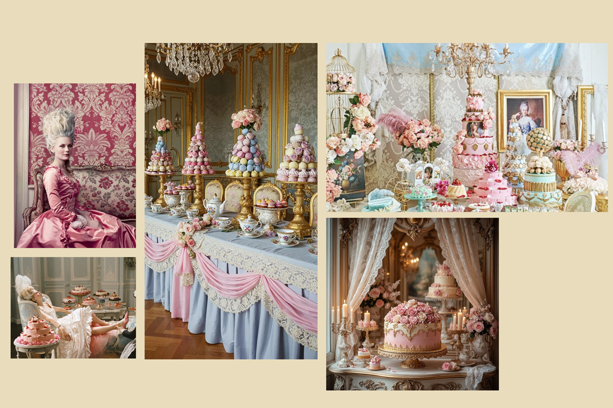
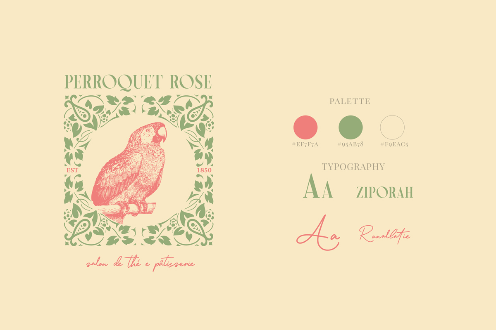
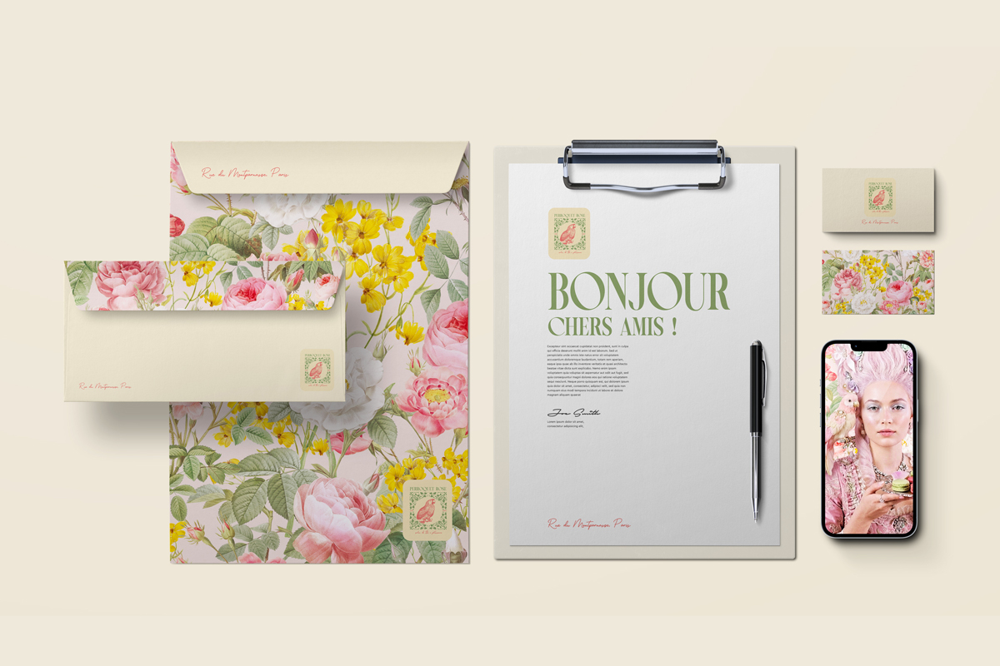

Human by
Design
Exploring where artificial intelligence ends and human creative judgement begins.
Project Question
What remains human when AI becomes part of the creative process?
Human Creativity & Artificial Intelligence
Brand Experiment
The Story
Human by Design began as a branding challenge, but quickly evolved into a broader reflection on the relationship between artificial intelligence and human creativity.
Inspired by Sofia Coppola's Marie Antoinette, the project explores how AI can generate visual possibilities while human judgement gives them meaning, coherence and emotional depth.
Rather than designing a brand from scratch, the process became an experiment in creative direction: selecting, refining and transforming generated material into a cohesive visual identity.

Research
The project investigated how AI-assisted creative tools can support—not replace—the design process.
Using Envato Elements together with AI-generated concepts, multiple visual directions were explored before being refined through typography, composition, textures, colour and editorial decisions.
The research focused on the role of human judgement within an AI-assisted workflow.

Visual Language
The visual identity draws inspiration from French pâtisseries, flower houses and the pastel elegance of eighteenth-century interiors.
Soft colours, tactile textures and handcrafted imperfections intentionally contrast with the visual perfection often associated with AI-generated imagery.
Rather than hiding the digital process, the project celebrates the dialogue between computational possibilities and human sensibility.

Creative Process
The final identity emerged through continuous refinement. AI generated possibilities; creative direction transformed them into a coherent visual system.
Outcome
Originally created for the Envato Challenge, Human by Design became an exploration of creative authorship in the age of artificial intelligence.
The project demonstrates that AI can accelerate exploration, while human taste, intuition and editorial judgement remain essential to creating meaningful design.

AI generates possibilities.
Human judgement creates meaning.
Skills
Research Continues
Human by Design expands the broader research developed throughout the Lab by investigating how emerging technologies reshape—not replace—the creative process.
Together with Atlas of Forgotten Queens, TimeMap, Wonder Madrigale and The Data Merchant, it explores how design can transform research, culture and technology into meaningful experiences.